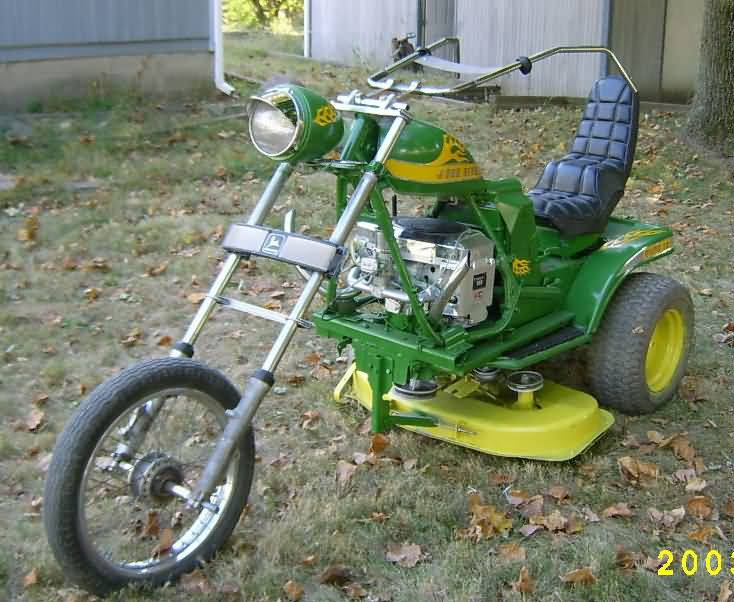
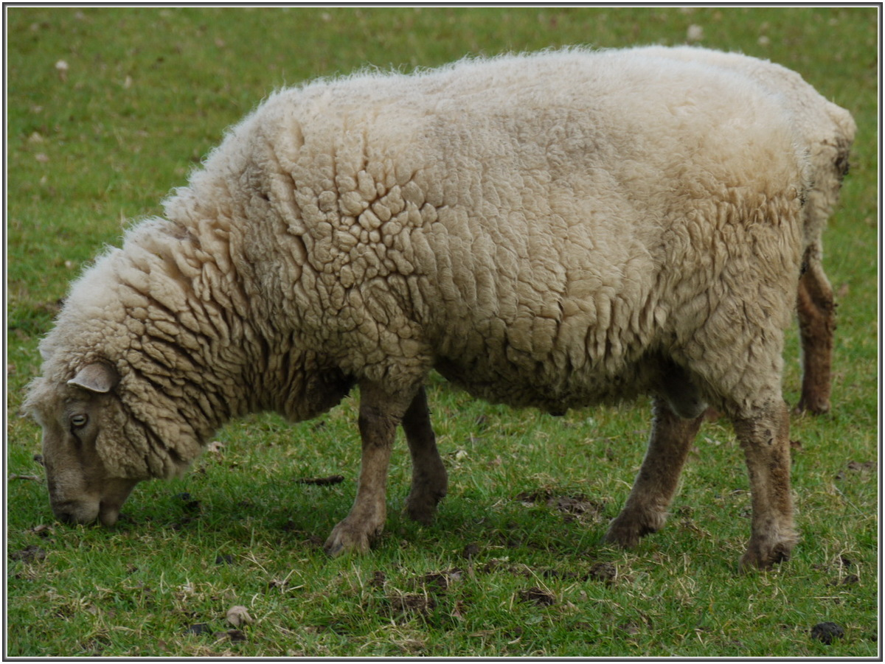

La démarche de conception a pour but de réaliser un produit correspondant a un besoin
Exemples :
produire de l'energie électrique à l'aide du soleil :
des panneaux photovoltaiques
secher les cheveux grace à de l'air chaud
un seche cheuveux
Il faudra toutefois préciser certains besoins pour affiner le produit
Exemple :
Tondre le gazon
 ou bien 
Une tondeuse Un mouton
Created with the Personal Edition of HelpNDoc: Single source CHM, PDF, DOC and HTML Help creation